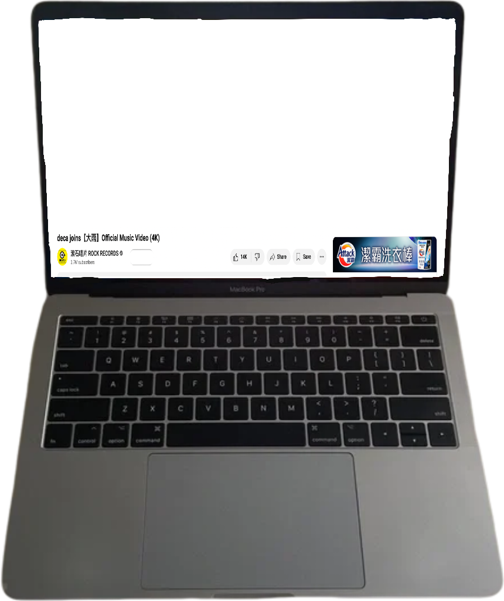
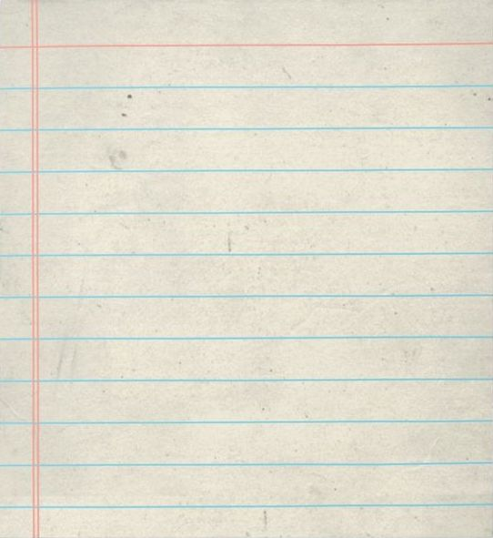
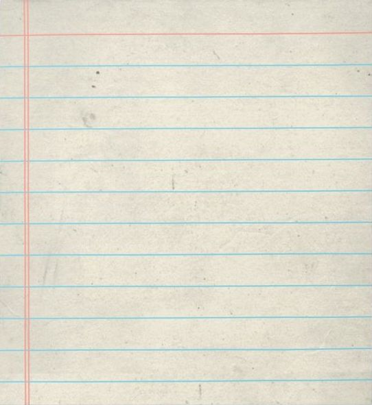

 

deca joins跟我完全就是随缘的网恋只能说是当时无趣中的一抹深蓝色。
2022年在平常不过的下午，大雨MV封面中的女主穿着高领缎面蓝色长裙向我凝视。
可能是眼角的泪，或许是过于厚重的腮红让我点进视频。
却被撑着伞的郑敬儒顿时吸引：长发、圆镜、撑伞和突然响起的梦幻流行单线贝斯从此deca joins就成为了我生命涣散但不失焦点的聚焦光。
娃娃的《大雨》是电子贝斯的狂欢，deca joins改编的《大雨》是高速下柔和鼓点中的厌世浪漫。
我不懂音乐，但我懂《大雨》音旋中活着和厌烦活着的浪漫。